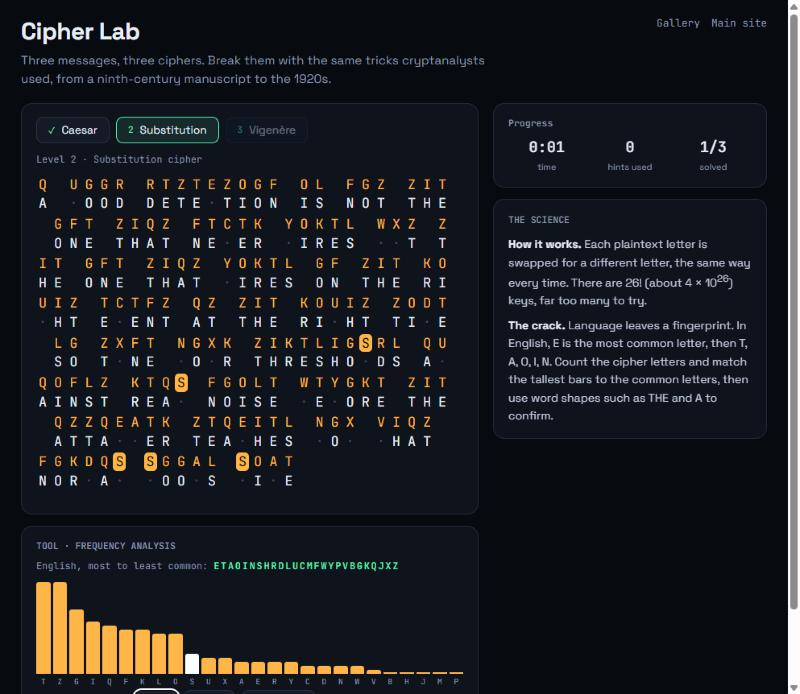
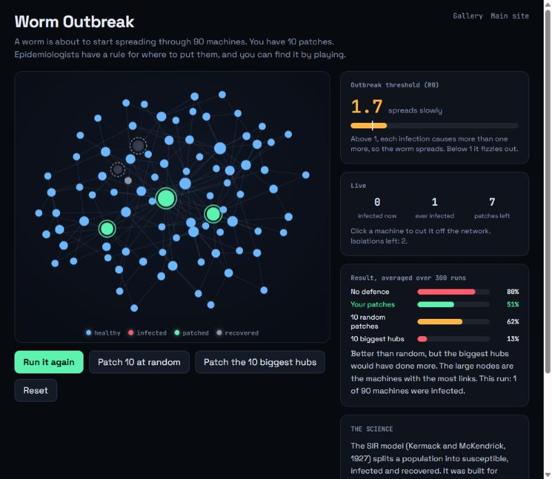
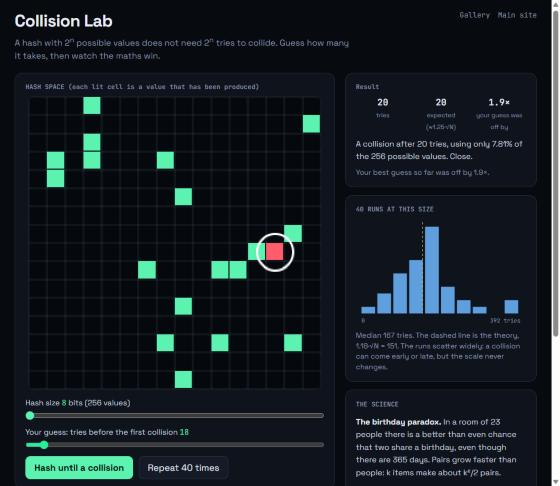

Six ways to explore the same CV, and three games
Each one turns my work into something you can pull, play or fly through. They run in your browser and use only what is on my CV.

Threat Graph
orbit · search · correlateEvery project, skill and framework as a linked node in 3D space. Search it, filter it, fly into a node, or press Correlate and watch it cluster the way ThreatWeave groups indicators.
Open →
Intrusion Replay
tune rules · stop the attackThe SOC Detection Lab as a game. Watch a four-stage intrusion with every rule off, then tune the detections: too loose floods the analyst, too lax and the data leaves.
Open →
CyberCity
fly · tour · click a towerMy six projects as landmarks in a 3D night city, with traffic, rain and a guided tour that flies into each one.
Open →
DNA Helix
rotate · unzip a pairWhat I built on one strand, what it demonstrates on the other. Click any base pair and it unzips to show the details.
Open →
Career Metro
watch it build · ride a lineFive lines through six years. Interchanges mark the work that counted twice, like the dissertation that is also a project. Zoom, pan and ride any line.
Open →
Periodic Table of Shadman
mix elements · form compoundsPick tools and skills to see which of my projects they combine into, or pick a project and watch its elements bond.
Open →Three science games
Small experiments from the maths and the history behind security. Each one lets you find the result yourself.

Cipher Lab
frequency analysis · index of coincidenceBreak a Caesar shift, a substitution cipher and a Vigenère cipher using the methods cryptanalysts discovered, from a ninth-century manuscript to the 1920s.
Play →
Worm Outbreak
epidemic model · network hubsContain a worm with 10 patches using the SIR epidemic model. Patch at random and it spreads; patch the hubs and the threshold collapses.
Play →
Collision Lab
birthday paradox · hash collisionsGuess how many hashes it takes to find a collision, then watch the maths win. A hash breaks at about the square root of its size, not its size.
Play →The main site has five themes too
Open the palette button in the main portfolio's navigation, or press T. Terminal, Kill chain, Mizan, Blueprint and Phosphor each draw on a different project or skill from the CV.